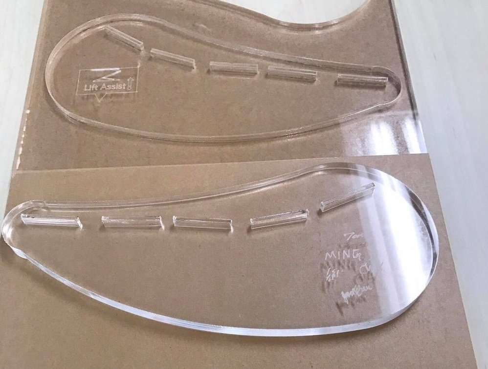
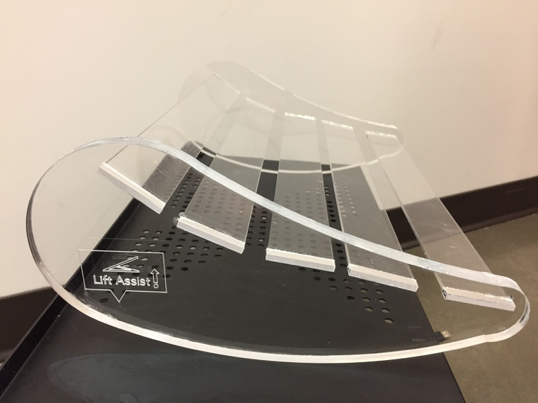
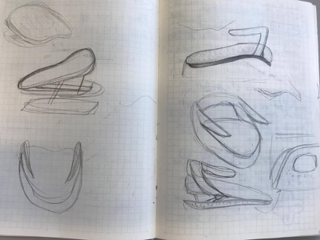
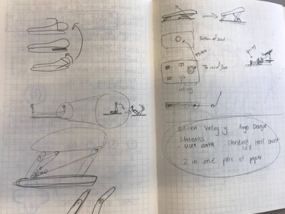
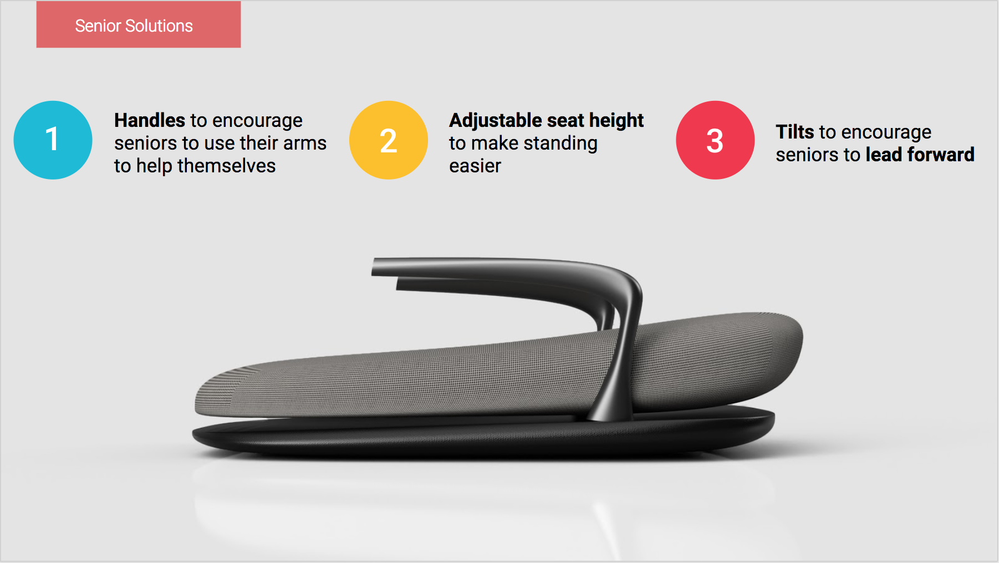
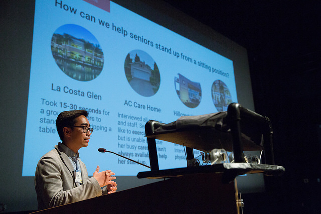

Lift Assist: Designing for Independence
Helping Improve the Quality of Life of Senior Citizens
Overview
Objective
For the 2nd annual design competition at UCSD, our group had the opportunity to design a device that improves the quality-of-life of senior citizens. I collaborated with an interdisciplinary group of undergraduate students whom I meet through UCSD's Design for America. The overall goal of this competition is to find, design, and create a solution that will improve the lives of senior citizens. The competition is split into three different parts: Need finding, Prototyping, and Finalizing.
Approach
Due to the broad scope of the theme, we started by researching online and through research papers to give us a background on the current problem and existing solutions. We then went ahead in interviewing numerous seniors, care takers, and professionals in the field to give us an in-depth understanding of the problem and empathize with the seniors. Afterwards, we framed the problem we wanted to tackle and ideated until we decided on three ideas. We iterated through many prototypes until we finally created one that satisfied the needs of the seniors.
My role
User Researcher | Designer
Duration
October 2016 - June 2017
Team members
Jan De Castro, Eric Richards, Tony Fung, Jason Barr, Andres Baez, and Ming Shen
Tools
Autodesk Fusion 360
Skills
User Research | Industrial Design | Ethnography
Design Process
Problem Space
A majority of seniors across the nation and in the world face problems dealing with communication, transportation, independence, and more. It was up to us students to research and find a certain problem space and ideate, design, and create a solution that would improve the quality of life of senior citizens.
Research
Because was the problem space was so wide, we started out with researching online for the common problems that many seniors face and started reading research papers that dealt with those problems. We also looked at existing solutions to know what seniors are using today to solve their issues. Afterwards, our research mainly consisted of ethnographic practices and interviews
Interviews
Interviews with Senior
We interviewed and observed a wide array of seniors from different care homes. From our initial research, we discovered that the quality of life of seniors depended on the location, financial situation, and also if they were dependent or independent. We observed seniors in multiple occasions: UCSD Alumni Meet and Greet, La Costa Glen Retirement Community, and the American Canyon Care Home
Key Insights: We found that it took 15-30 seconds for a group of seniors to stand up while gripping the table for support in La Costa Glen. Possible design solution dealing with mobility and overall physical health.
Interviews with Care Givers
To get the perspective of the ones taking care of the seniors, we interviewed caregivers from different facilities.
Key Insights: Most seniors that come to care homes would sometimes become too dependent on the caregivers and others for help. Possible design solution in encouraging independence.
Interview with Professionals
We were given the opportunity to interview a professional psychiatrist and a researcher that worked in the geriatrics ward. We were able to observe professional services when dealing with patients that were undergoing physical therapy.
Key Insights: The way seniors stand up from bed or a from a sitting position is very taxing for both seniors and caregivers. It damages the knee and puts a lot of strain on different parts of the body. Possible design solution in dealing with physical health and support.
Synthesis and How Can We's
Main Points
We wanted to tackle all of the problems that we observed so far. We found that Mobility, Health, and Independent Living were all tied down to if the seniors can stand up by themselves.
Framing our Question
“How can we help seniors stand up from a sitting position?”
Ideation
Our team had a few design sprint sessions focusing on finding a solution for our questions. Throughout this whole session, our group was able to come up with over 50 different ideas in helping seniors stand up from a sitting position. Each of us voted on ideas we thought were the most effective and efficient. After voting, we were able to narrow it down to three main ideas:
- An air-pump powered seat that would help seniors rise when trying to get up.
- A redesign the walker to be more senior-friendly when they want to stand up
- A redesign of the chair cushion that would lift the seniors up while providing supports on the sides when they try getting up
In the end, we picked idea #2 and #3 to focus on with a little remix of the best elements of the other ideas. We started sketching different features and mechanisms that would help achieve the ideal lifting sensation.
Prototyping
First Prototype - Idea #2
Our first prototype consisted of laser-cutting silicone glass. Usually most seniors use up a lot of energy trying to stand up while trying to grab onto something. We wanted to minimize this by having them rock off their chair. This would take advantage of the shape of the chair to have them rock off the bed or chair with minimal effort.
The Problem: This prototype was too unstable. When we tested with ourselves, it was too slippery and would often slide off the chair. We deemed it too dangerous to test with seniors.
 Second Prototype - Idea #3
Since Idea #2 was too unstable, we decided to go with Idea #3 in building a chair cushion that would steadily lift the senior while standing. The sketches below details some of our initial ideas about the look and the mechanisms behind it. This prototype included handles on the side to give seniors a place to grab and hold on to for support when trying to stand up.
Our Sketches – These were the initial sketches we had when we tried visualizing the lift assist.
 Final Prototype - Idea #3
The picture below shows the final concept of the lift assist. I used Autodesk fusion 360 to design and render this 3-d model. Sadly, we forgot to take a picture of the physical version of this 3-d cad model but its overall function and look were very similar.
User Testing
The picture below shows the final concept of the lift assist. I used Autodesk fusion 360 to design and render this 3-d model. Sadly, we forgot to take a picture of the physical version of this 3-d cad model but its overall function and look were very similar.

Presentation
We presented our final solution to the whole La Costa Glen community, a panel of judges from UCSD’s design lab, and a few industry partners.
Conclusion
What I've Learned and How I can Improve
Our Sketches – These were the initial sketches we had when we tried visualizing the lift assist.